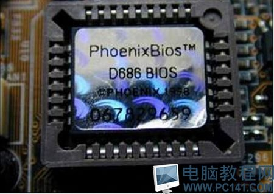
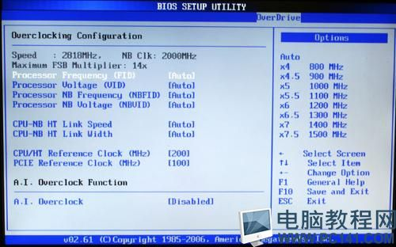
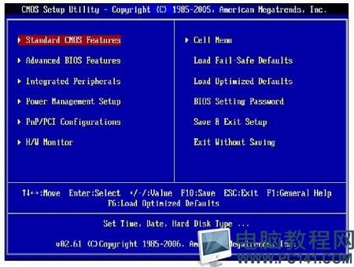
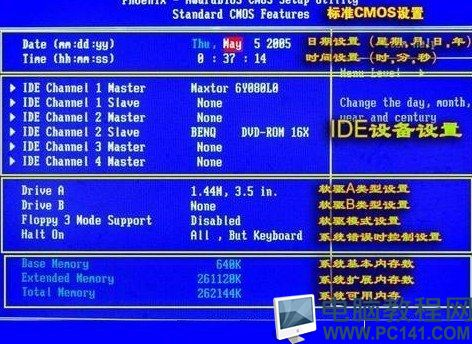
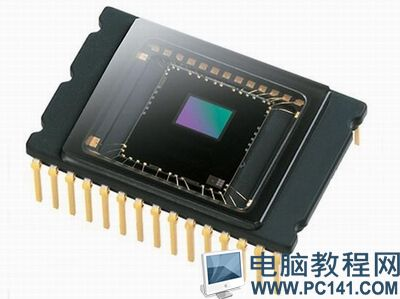
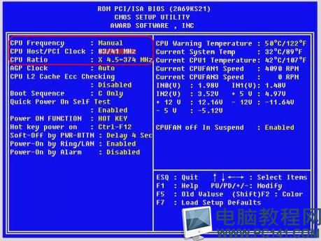
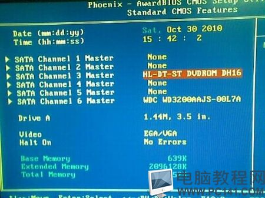
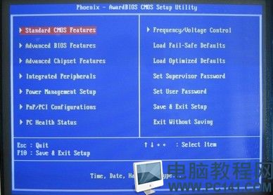

BIOS是什么意思？bios cmos的关系是什么？
这次pc141电脑教程网主要跟大家分享的是‘bios是什么、cmos是什么’以及对BIOS设置和CMOS设置在基本概念上的区分与关系。

BIOS是什么意思?
所谓BIOS，实际上就是微机的基本输入输出系统（BasicInput－OutputSystem），其内容集成在微机主板上的一个ROM芯片上，主要保存着有关微机系统最重要的基本输入输出程序，系统信息设置、开机上电自检程序和系统启动自举程序等。

BIOS有什么作用?
BIOSROM芯片不但可以在主板上看到，而且BIOS管理功能如何在很大程度上决定了主板性能是否优越。

BIOS管理功能主要包括：
1．BIOS中断服务程序
BIOS中断服务程序实质上是微机系统中软件与硬件之间的一个可编程接口，主要用来在程序软件与微机硬件之间实现衔接。
例如，DOS和Windows操作系统中对软盘、硬盘、光驱、键盘、显示器等外围设备的管理，都是直接建立在BIOS系统中断服务程序的基础上，而且操作人员也可以通过访问INT5、INT13等中断点而直接调用BIOS中断服务程序。
2．BIOS系统设置程序
微机部件配置记录是放在一块可读写的CMOSRAM芯片中的，主要保存着系统基本情况、CPU特性、软硬盘驱动器、显示器、键盘等部件的信息。
在BIOSROM芯片中装有"系统设置程序"，主要用来设置CMOSRAM中的各项参数。
这个程序在开机时按下某个特定键即可进入设置状态，并提供了良好的界面供操作人员使用。
事实上，这个设置CMOS参数的过程，习惯上也称为"BIOS设置"。
一旦CMOSRAM芯片中关于微机的配置信息不正确时，轻者会使得系统整体运行性能降低、软硬盘驱动器等部件不能识别，严重时就会由此引发一系统的软硬件故障。
3．POST上电自检微机按通电源后，系统首先由POST（PowerOnSelfTest,上电自检)程序来对内部各个设备进行检查。
通常完整的POST自检将包括对CPU、640K基本内存、1M以上的扩展内存、ROM、主板、CMOS存贮器、串并口、显示卡、软硬盘子系统及键盘进行测试，一旦在自检中发现问题，系统将给出提示信息或鸣笛警告。
4．BIOS系统启动自举程序
系统在完成POST自检后，ROMBIOS就首先按照系统CMOS设置中保存的启动顺序搜寻软硬盘驱动器及CD-ROM、网络服务器等有效地启动驱动器，读入操作系统引导记录，然后将系统控制权交给引导记录，并由引导记录来完成系统的顺利启动。

Bios设置界面
CMOS是什么意思?

CMOS(本意是指互补金属氧化物半导体存储嚣，是一种大规模应用于集成电路芯片制造的原料)是微机主板上的一块可读写的RAM芯片，主要用来保存当前系统的硬件配置和操作人员对某些参数的设定。

CMOSRAM芯片由系统通过一块后备电池供电，因此无论是在关机状态中，还是遇到系统掉电情况，CMOS信息都不会丢失。
由于CMOSRAM芯片本身只是一块存储器，只具有保存数据的功能，所以对CMOS中各项参数的设定要通过专门的程序。

早期的CMOS设置程序驻留在软盘上的(如IBM的PC/AT机型)，使用很不方便。现在多数厂家将CMOS设置程序做到了BIOS芯片中，在开机时通过按下某个特定键就可进入CMOS设置程序而非常方便地对系统进行设置，因此这种CMOS设置又通常被叫做BIOS设置。

BIOS设置和CMOS设置的区别与联系
BIOS是主板上的一块EPROM或EEPROM芯片，里面装有系统的重要信息和设置系统参数的设置程序（BIOSSetup程序)。
CMOS是主板上的一块可读写的RAM芯片，里面装的是关于系统配置的具体参数，其内容可通过设置程序进行读写。
CMOSRAM芯片靠后备电池供电，即使系统掉电后信息也不会丢失。
BIOS与CMOS既相关又不同：BIOS中的系统设置程序是完成CMOS参数设置的手段；
CMOSRAM既是BIOS设定系统参数的存放场所，又是BIOS设定系统参数的结果。
因此，完整的说法应该是"通过BIOS设置程序对CMOS参数进行设置"。
由于BIOS和CMOS都跟系统设置密初相关，所以在实际使用过程中造成了BIOS设置和CMOS设置的说法，其实指的都是同一回事，但BIOS与CMOS却是两个完全不同的概念，千万不要搞混淆了。
何时要对BIOS或CMOS进行设置？
众所周知，进行BIOS或CMOS设置是由操作人员根据微机实际情况而人工完成的一项十分重要的系统初始化工作。在以下情况下，必须进行BIOS或CMOS进行设置：
1、新购微机
即使带PnP功能的系统也只能识别一部分微机外围设备，而对软硬盘参数、当前日期、时钟等基本资料等必须由操作人员进行设置，因此新购买的微机必须通过进行CMOS参数设置来告诉系统整个微机的基本配置情况。
2．新增设备
由于系统不一定能认识新增的设备，所以必须通过CMOS设置来告诉它。
另外，一旦新增设备与原有设备之间发生了IRQ、DMA冲突，也往往需要通过BIOS设置来进行排除。
3．CMOS数据意外丢失
在系统后备电池失效、病毒破坏了CMOS数据程序、意外清除了CMOS参数等情况下，常常会造成CMOS数据意外丢失。此时只能重新进入BIOS设置程序完成新的CMOS参数设置。
4．系统优化
对于内存读写等待时间、硬盘数据传输模式、内／外Cache的使用、节能保护、电源管理、开机启动顺序等参数，BIOS中预定的设置对系统而言并不一定就是最优的，此时往往需要经过多次试验才能找到系统优化的最佳组合。